20th Street to Grand
Rockridge-bound median time reaches 1.78 minutes in the PM peak, compared with a 1.00-minute low-traffic reference. Midday is 70% slower.
Independent corridor analysis · August 19, 2026
Two reliability problems appear on the same route. Daytime buses lose time on particular Broadway blocks. After 7 p.m., those street delays generally ease—but scheduled service becomes much less likely to appear, and the gaps riders experience become longer and more erratic.
The central distinction
Roadway performance and service delivery are not the same measure. Stop-to-stop time shows where a bus already on Broadway slows down. Scheduled-versus-observed trips and actual headways show whether the next bus appears at all. Combining them would hide the fact that the dominant failure changes by time of day.
What the data says
The named downtown crossings are real hotspots, although they are not the only slow blocks on the corridor. The evening result is sharper: buses that do appear move faster, but nearly one weekday evening trip in five is not observed at central Broadway.
Rockridge-bound median time reaches 1.78 minutes in the PM peak, compared with a 1.00-minute low-traffic reference. Midday is 70% slower.
The weekday evening IQR is 12.8–22.9 minutes Rockridge-bound and 14.1–21.1 minutes Fruitvale-bound. The p90 reaches 34 and 31 minutes.
Of 1,619 scheduled weekday evening trips at the two screenline stops, 1,307 have an arrival. Another 304 have no vehicle-position observation anywhere on the route.
Evening speed recovery does not translate into evening reliability.
Across the four focus segments, median times fall 14%–33% from the PM peak to evening. Yet the median arrival interval rises to 17.7 minutes, p90 rises above 30 minutes, and roughly 19% of observed intervals cross one or more missing scheduled slots.
Study design
The corridor runs from the downtown turn at 8th/9th Street to College Avenue. Both directions are analyzed using their actual stop patterns; the patterns are not perfectly symmetric because stops fall on different blocks.
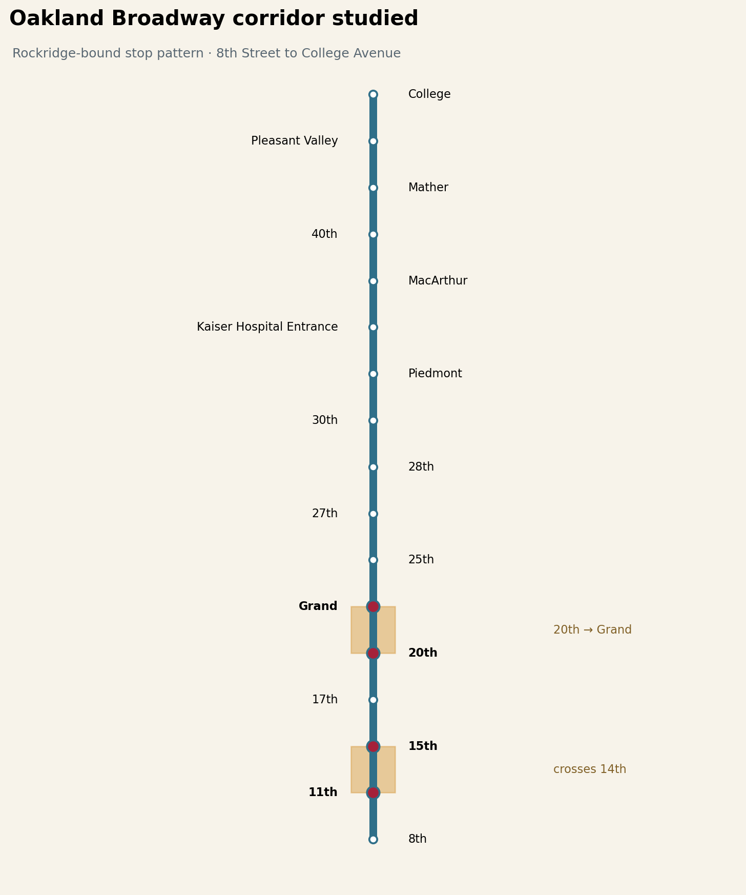
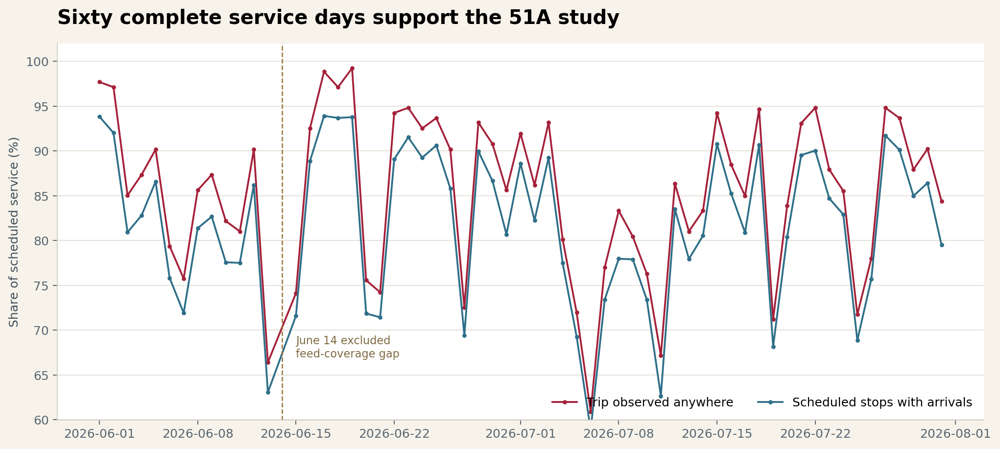
Daytime street performance
On regular weekdays, Broadway’s slow blocks emerge early and remain visible through the PM peak. The two Rockridge-bound focus segments are substantially slower than their own 5–7 a.m. reference: 11th–15th is 66% slower at midday, while 20th–Grand is 79% slower in the PM peak.
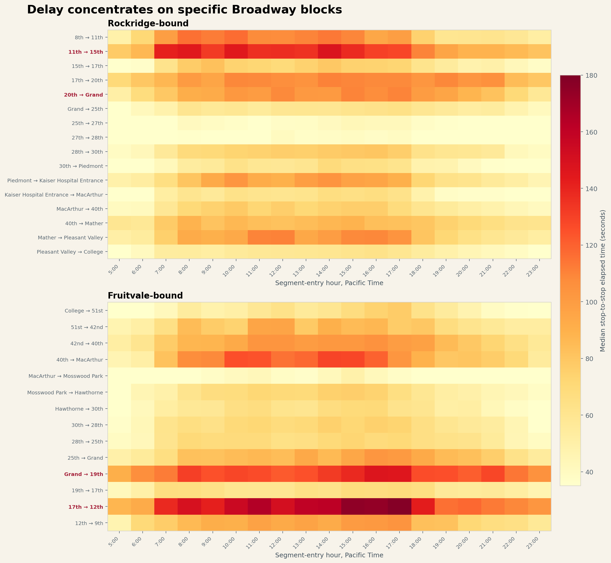
| Direction and segment | Low-traffic ref. | AM median | Midday median | PM median | Evening median | PM slowdown | PM p90 |
|---|---|---|---|---|---|---|---|
| Rockridge · 11th → 15th | 1.39 min | 2.05 | 2.30 | 2.10 | 1.48 | +51% | 2.98 |
| Rockridge · 20th → Grand | 1.00 min | 1.30 | 1.69 | 1.78 | 1.31 | +79% | 2.78 |
| Fruitvale · 17th → 12th | 1.48 min | 2.13 | 2.58 | 2.79 | 1.88 | +88% | 4.20 |
| Fruitvale · Grand → 19th | 1.64 min | 1.98 | 2.11 | 2.30 | 1.98 | +40% | 3.51 |
Low-traffic reference is the segment’s median on regular weekdays from 5–7 a.m. Each focus-period cell contains 485–1,209 observations. Elapsed time includes upstream dwell as well as movement, queuing, and signals.
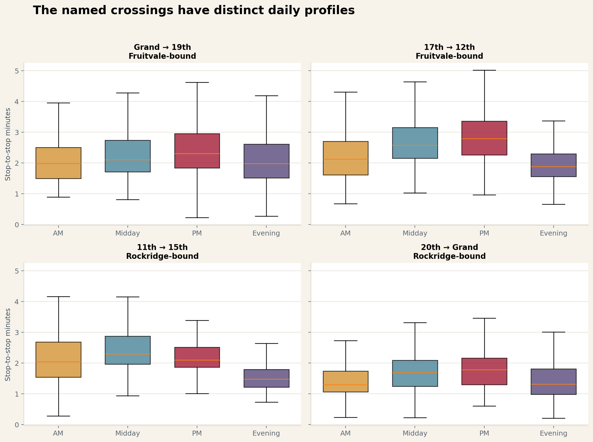
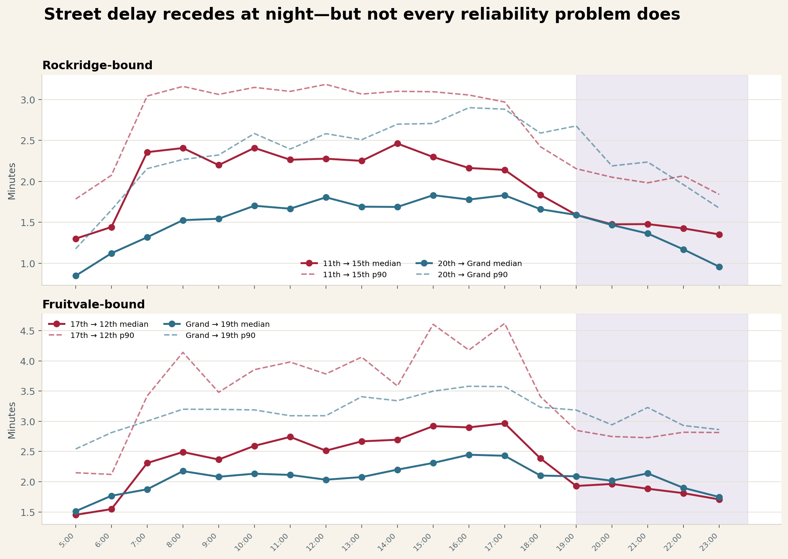
Across all Broadway stop pairs, several northern blocks post larger percentage changes from their own early-morning references. That makes a corridorwide TSP screening more defensible than treating two intersections as the whole problem.
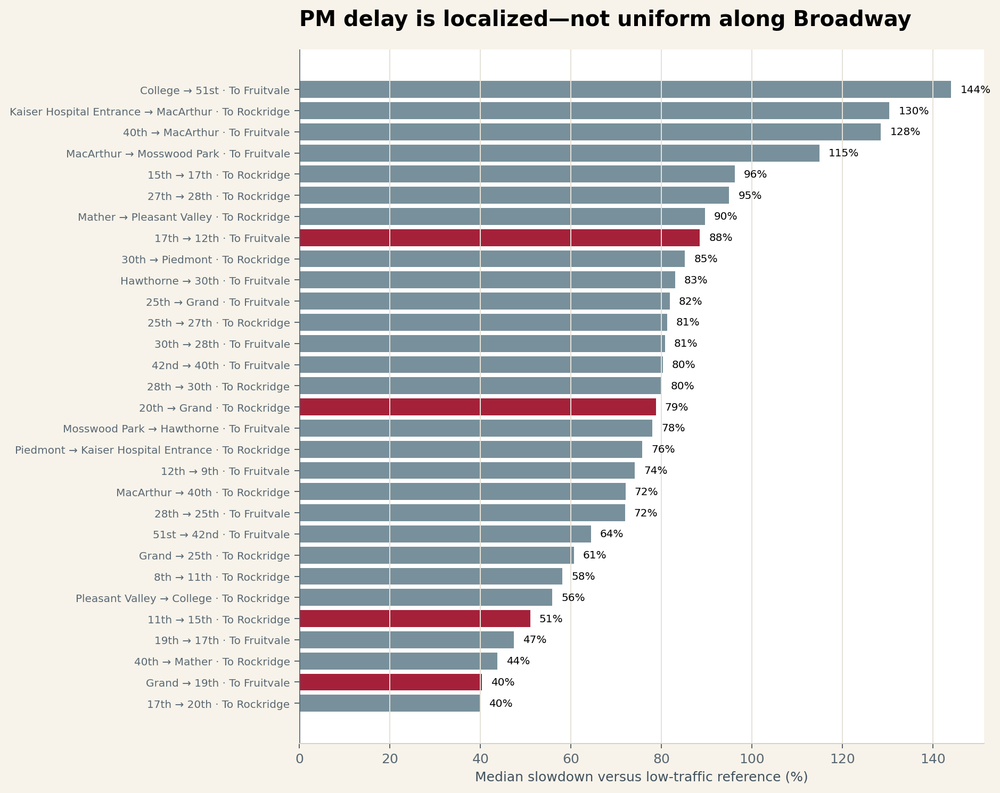
Evening service reliability
From 7 p.m. to midnight on regular weekdays, the scheduled median is 15 minutes in both directions. Actual medians are 17.6–17.7 minutes. More importantly, the upper tail expands: p90 reaches 31–34 minutes and p99 approaches one hour.
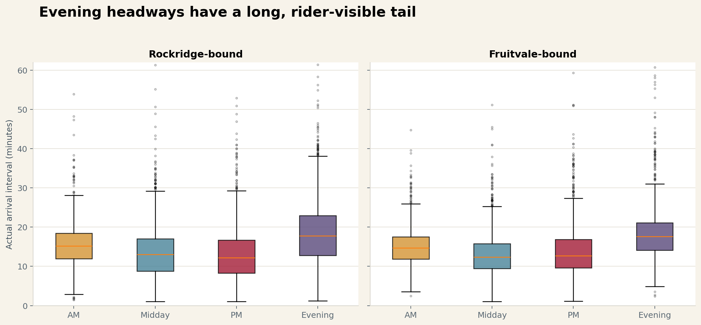
| Weekday evening | Scheduled median | Actual IQR | Actual median | p90 | p95 | p99 | >2× schedule | Mean rider wait |
|---|---|---|---|---|---|---|---|---|
| Rockridge-bound | 15.0 min | 12.8–22.9 | 17.7 | 33.9 | 40.3 | 59.5 | 12.2% | 12.8 min |
| Fruitvale-bound | 15.0 min | 14.1–21.1 | 17.6 | 31.0 | 39.0 | 59.6 | 11.0% | 12.6 min |
Mean random-arrival wait is Σh² ÷ 2Σh. Evenly spaced 15-minute service implies 7.5 minutes; the observed distribution raises that to 12.6–12.8 minutes.
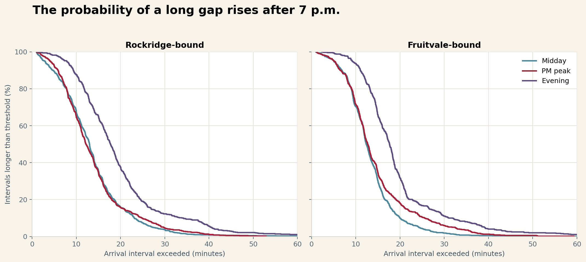
At the screenline, 19.9% of scheduled Rockridge-bound evening trips and 17.6% of Fruitvale-bound trips have no vehicle-position observation anywhere on Line 51A. Only 0.5% in each direction are seen elsewhere on the route but not at the screenline. The dominant signature is therefore whole-trip non-observation, not a bus routinely disappearing midway along Broadway.
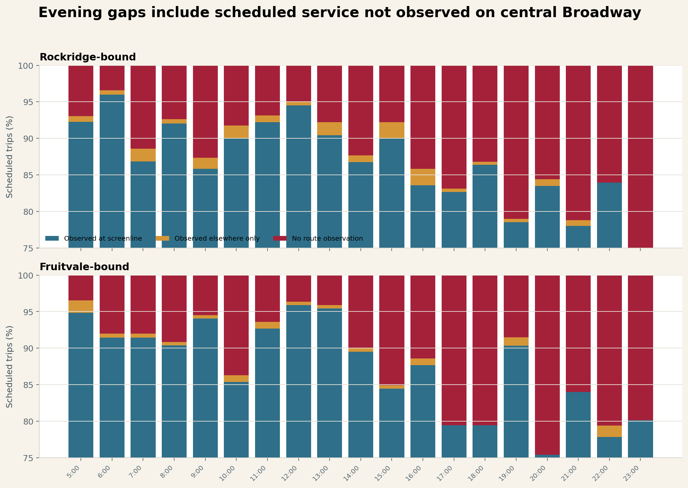
| Weekday evening screenline | Scheduled trips | Observed at stop | Observed elsewhere only | No route observation | Stop observation |
|---|---|---|---|---|---|
| Rockridge · Broadway & 15th | 831 | 662 | 4 | 165 | 79.7% |
| Fruitvale · Broadway & 17th | 788 | 645 | 4 | 139 | 81.9% |
| Combined | 1,619 | 1,307 | 8 | 304 | 80.7% |
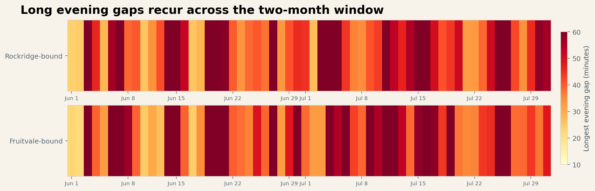
Weekend extension
Saturday and Sunday/holiday street times are not uniformly worse than weekdays. Service delivery is. Only 52.6% of scheduled Saturday evening trips and 64.7% of Sunday/holiday evening trips are observed at the two central screenline stops.
| Day type | Days | Route trips observed | Evening screenline observed | Median evening interval | p90 evening interval | Longest evening gap |
|---|---|---|---|---|---|---|
| Regular weekday | 44 | 87.8% | 80.7% | 17.7 min | 32.3 min | 99.7 min |
| Saturday | 7 | 75.4% | 52.6% | 24.2 min | 68.8 min | 151.8 min |
| Sunday / holiday | 9 | 81.1% | 64.7% | 23.1 min | 58.0 min | 112.9 min |
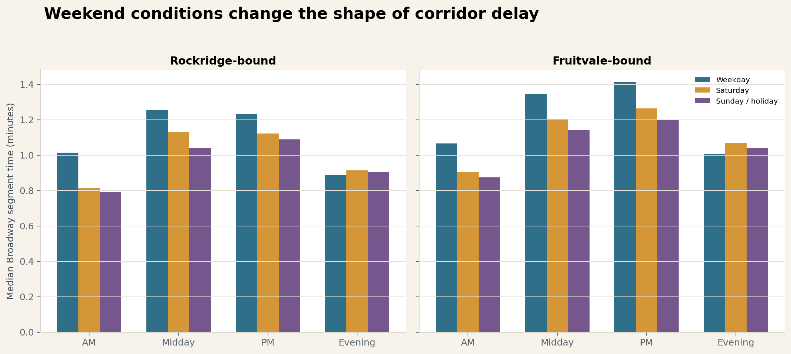
Joint diagnosis
The chart below treats each service hour as two coordinates: how much slower Broadway segments are than their low-traffic reference, and how irregular the arrival intervals are. Evening hours move left as street delay falls, but often remain high on spacing variation.
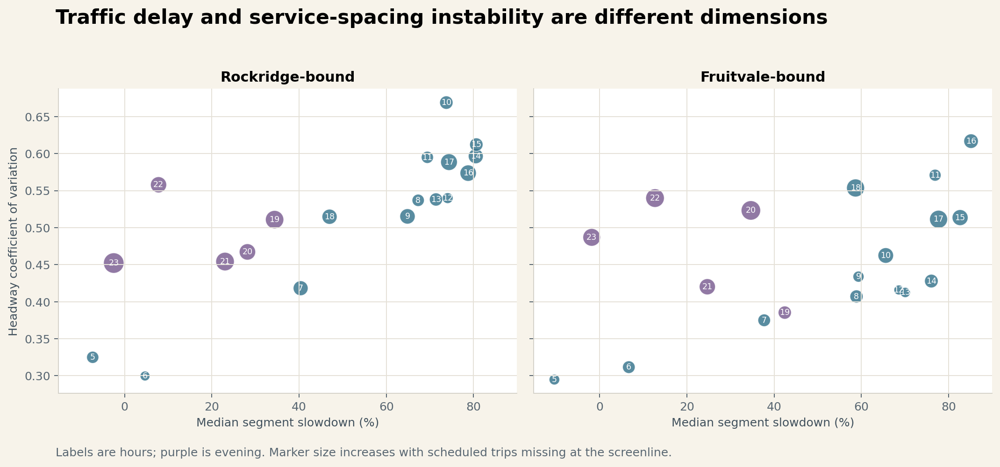
The focus-segment PM medians are similar across the two GTFS versions. Rockridge-bound 11th–15th is 2.15 minutes before the June 14 schedule shift and 2.08 afterward; 20th–Grand is 1.81 versus 1.77. The opposing-direction changes are mixed rather than uniformly worse.
At the Rockridge-bound screenline, weekday evening observation falls from 83.7% in the June 1–13 feed era to 78.5% from June 15–July 31. Fruitvale-bound falls from 88.3% to 79.9%. This is descriptive, not evidence that the schedule change caused the decline.
Engineering and operations agenda
TSP can reduce a bus’s exposure to cross traffic. It cannot replace a bus that never enters the data—or guarantee that unevenly spaced buses leave a terminal evenly. Line 51A needs both a street-running program and a run-delivery program.
Methodology and limitations
transit-203605.actransit.trip_observations.analysis/line_51a_2026_08_19 directory.